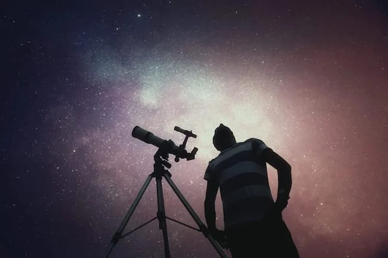
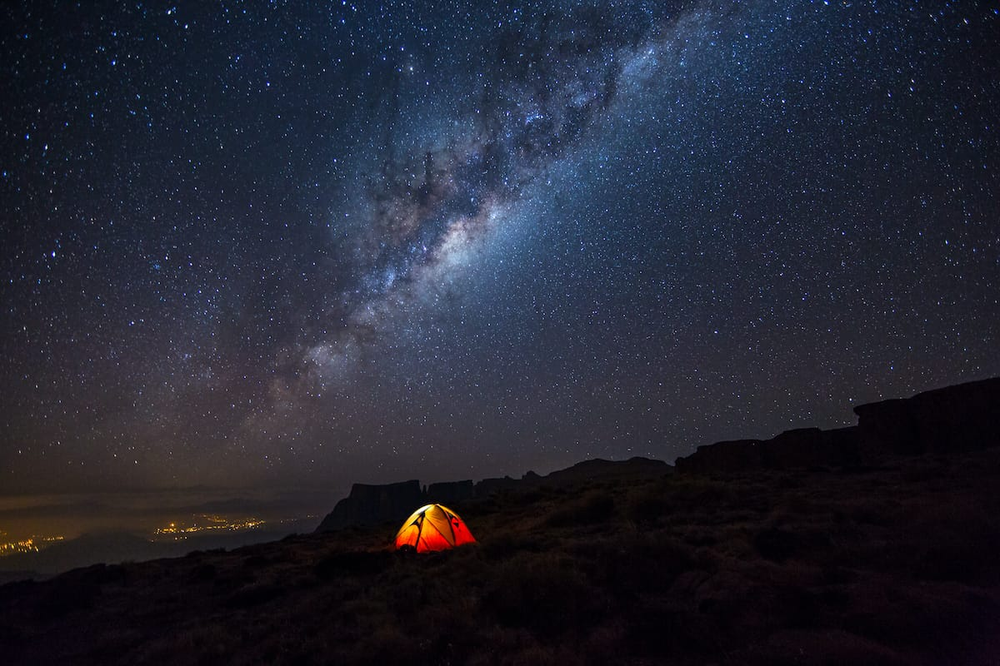
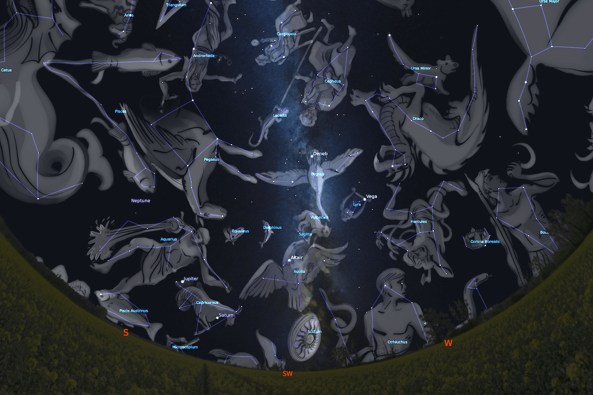
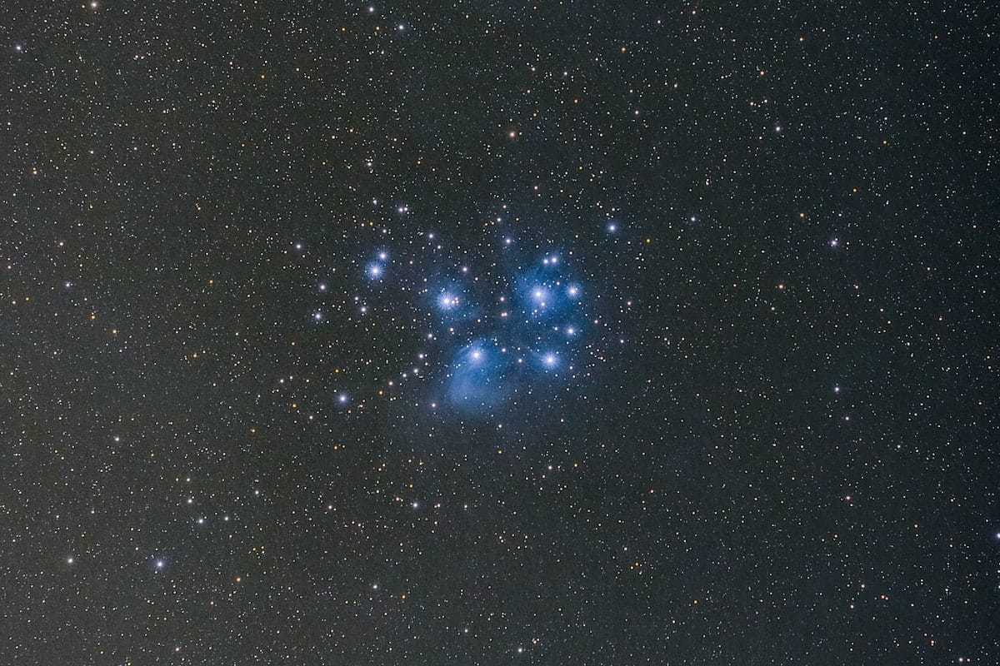
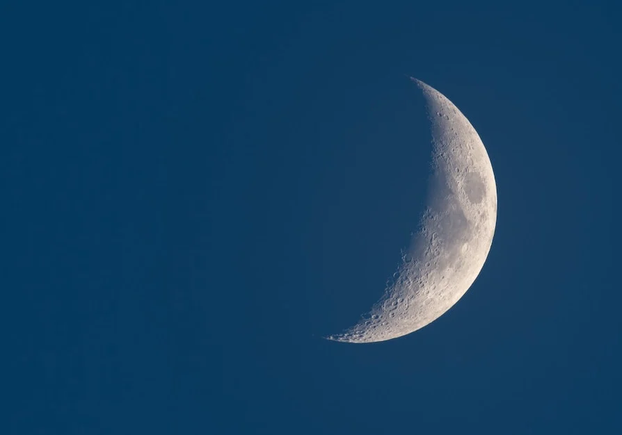
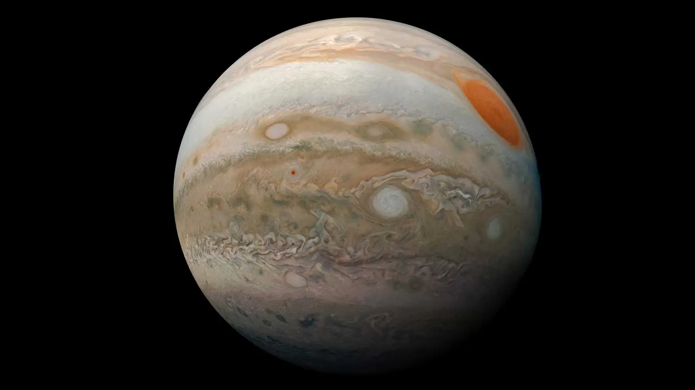

What you can expect to see
There are many incredible sights to behold when you go stargazing! From a dark sky location, the human eye can see approximately 2,500 stars without any visual aid, this compared to perhaps only 100 from a town or city.
The Milky Way

When viewed from a dark site with just your eyes the Milky Way looks truly incredible! Indeed, the main reason we created this Go Stargazing website is to encourage as many of you as possible to get out there and see it for yourselves!
The Milky Way is the name given not only to the Galaxy that we live in but also to the band of light that stretches across the sky, formed by the collective light of billions of distant stars. It’s a truly memorable experience, whenever you get to see it, and really gives a sense of our place in the Universe.
The very best time to see the Milky Way from the UK is during early Autumn when it can be viewed high overhead of an evening, its light arching from one horizon to the other. At this time the brightest region of the Milky Way, looking towards the centre of the Galaxy where the most stars are, is just about visible from the UK low in the sky (the further south you travel the higher things appear in the sky, therefore the galactic centre is best viewed from the Southern Hemisphere).
The Milky way can, however, be seen throughout the year, and whilst perhaps not as bright can still be wonderfully impressive. Another good time to view is in the early hours of the morning during the Spring months when the constellation of Cygnus (the swan) is placed high in the sky — the Milky Way passes through this part of the sky and looks amazing!
Constellations

Image created using Stellarium
Finding your way around the sky, learning the names of stars and groups of stars that make up constellations, can be really good fun! Even in light-polluted areas, there are enough bright stars visible to make it possible to recognise a good number of constellations, this knowledge can come in really useful when you visit a dark sky site.
Most star names are Arabic — historically Arabs were amazing astronomers who benefited from the most amazing pre-light-pollution views of the skies. One famous star, Betelguese (pronounced “betel-gurz” or if you prefer “beetle-juice”), is Arabic for “armpit”. This bright orange star in the constellation of Orion (the Hunter) marks the location where he holds his club in the air!
Constellations are patterns of stars that are formally recognised by the International Astronomical Union. In Western culture, we use the shapes, characters and creatures as depicted in Greek mythology (the Greeks were also awesome astronomers!). Other cultures have their own way of looking at the skies, or “star lore“.
Asterisms
As well as constellations there are also asterisms — asterisms are more easily recognised patterns of stars in the sky, however, do not have an officially recognised name (anyone can call a pattern of stars in the sky whatever they like!). The most famous asterism is the “Plough” or “Big Dipper” — the 7 bright stars that form this well-recognised pattern actually form part of the wider constellation Ursa Major (the Great Bear). Asterisms can span across constellations, the Summer Triangle for example is formed from bright stars in 3 different constellations. Learning how to spot asterisms, whether well-known ones or ones you make up yourself, makes navigating the skies much easier.
Star clusters

Skies do not get dark until late through Summer
Stars can be found in clusters — sometimes in loose groups (called open clusters) that can contain several dozen stars, or in tighter balls (known as globular clusters) which can contain tens of thousands, even hundreds of thousands of stars!
There are numerous examples of star clusters scattered all over the sky and many of them look truly stunning when observed using a telescope. As they tend to be some of the brighter objects they are really good targets for beginners and novices and are “go-to” objects for observatories and outreach events.
nebulae
A nebula is an object formed of a cloud of dust and gas — indeed, “nebula” is Latin for “cloud” or “fog”. Most are vast in size with many measured as being several light-years across (1 light year is equivalent to 5.8 trillion miles). Perhaps the most famous is the Orion nebula, a star-forming region where hot, newborn stars illuminate their surroundings. It’s easily located below the three belt stars and readily observed using binoculars, can be seen naked eye from dark sky sites and looks incredible through a telescope.
Some nebulae are the remnants of dead stars — as a star uses up its energy through nuclear fusion it either explodes and forms a supernova remnant (if massive enough) or forms a planetary nebula, the shell of the star’s atmosphere containing all of the elements it created during its lifetime.
Galaxies
M51 Whirlpool Galaxy by Robert Ince
A galaxy is a gravitationally bound collection of billions of stars, most of which will have their own Solar system. Their varied shapes and sizes, along with the different angles we see them from Earth, make finding them and observing through a telescope a joy! The most famous galaxy of all, the Andromeda galaxy, is even visible to the naked eye when observed from a dark location.
Distance to galaxies can range from the tens of millions of light-years to hundreds indeed thousands of millions. That they lie at such a staggering distance yet can still be observed simply by using a tube with mirrors or lenses gives testament to just how incredibly big they are! Note that whilst the human eye is very effective at seeing in low light, we do not see colour, and therefore galaxies and nebulae can only be seen in greyscale.
The Moon

A crescent Moon looks spectacular through a telescope!
The Moon is also a great target, especially as the varying angle of light from the Sun presents a continually changing perspective, showing different phases throughout the month.
The best time to observe the Moon is when it is not fully illuminated. The most detail can be seen along the line of the “terminator”, where daytime meets nighttime, and where the low angle of sunlight creates shadows showing craters and mountains most obviously.
Planets

planets information
With the exception of the most distant planet Neptune, all of the planets in our Solar System can be seen with the naked eye (Uranus, the second most distant, is just about visible from a dark site). Arguably the most impressive planet is Saturn, the rings visible through even a basic telescope especially when it is higher in the sky — it’s often a wow moment when people see it for the first time.
Jupiter also impresses with its horizontal cloud bands and “Great Red Spot”, an enormous storm system that would engulf the Earth 4 times over. The 4 Galilean Moons can also be seen as points of light when observed using binoculars and telescopes.
Mars can also appear incredibly impressive, especially on occasions where its orbit in the Solar System brings it near Earth. Using a telescope and on a night of good seeing, it’s possible to discern darker regions on its surface as well as its polar ice cap.
The name planet comes from the Greek for “wanderer” as the planets appear to wander across the sky rather than staying fixed in one location. Occasionally the planets form close alignments with each other, such events are called conjunctions and can be interesting to look out for and photography.